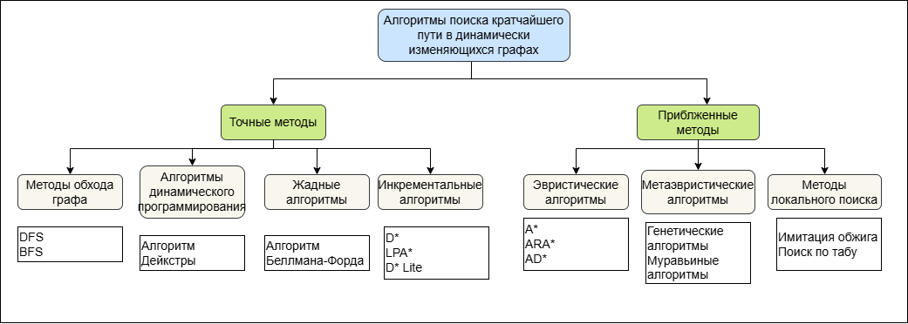

О проекте
Данный курсовой проект посвящен исследованию и сравнению эффективности алгоритмов поиска кратчайшего пути в условиях динамически изменяющихся графов. В работе рассматриваются точные, эвристические и метаэвристические методы, анализируется их производительность при различных типах изменений структуры графа и весов ребер, а также формируются практические рекомендации по их применению.
Автор: С.А. Лебедева, группа ФИб-2301-51-00
Руководитель: к.п.н., зав. кафедрой ПМИ Е.В. Разова
Цели и задачи
Цель работы - проведение сравнительного анализа алгоритмов поиска кратчайшего пути в динамически изменяющихся графах и разработка практических рекомендаций по их применению.
Основные задачи:
- Изучить и систематизировать алгоритмы поиска кратчайшего пути в динамически изменяющихся графах.
- Определить критерии оценки качества алгоритмов и сформировать тестовый набор данных.
- Реализовать выбранные алгоритмы (Дейкстры, A*, D* Lite, ACO) на языке C++.
- Провести серию вычислительных экспериментов для оценки производительности алгоритмов.
- Проанализировать результаты экспериментов и сформулировать практические рекомендации.
Классификация методов исследования
В рамках теоретического анализа была построена иерархическая структура методов поиска маршрута, разделяющая их на точные и приближенные подклассы.

Рисунок 1 – Классификация алгоритмов поиска кратчайшего пути
Краткое описание алгоритмов
- Алгоритм Дейкстры - классический точный жадный алгоритм. На каждом шаге выбирает локально оптимальную вершину с минимальным известным расстоянием. Требует неотрицательных весов рёбер и полного пересчёта маршрута при любых динамических изменениях графа.
- Алгоритм A* - эвристическая модификация алгоритма Дейкстры. Сокращает область поиска за счёт использования функции оценки f(v) = g(v) + h(v), где h(v) - эвристическое расстояние до цели (в работе - евклидово). Сохраняет строгое свойство оптимальности пути при условии использования допустимой эвристики.
- Алгоритм D* Lite - специализированный инкрементальный онлайн-алгоритм для динамических сред. Ведёт поиск в обратном направлении (от целевой вершины к стартовой) и при изменении графа выполняет локальный пересчёт только тех вершин, которые были непосредственно затронуты изменениями, повторно используя накопленные результаты вычислений.
- Муравьиный алгоритм (ACO) - стохастическая популяция метаэвристика, моделирующая колониальное поведение муравьёв. Построение маршрутов агентами основывается на вероятностном выборе с учётом параметров веса ребра и плотности отложенного феромонного следа. Не гарантирует нахождение точного оптимума, но обладает высокой гибкостью.
Сравнение реализованных алгоритмов
| Алгоритм |
Тип метода |
Оптимальность |
Сложность по времени |
| Алгоритм Дейкстры |
Точный |
Гарантирована |
O(V + E log V) |
| Алгоритм A* |
Эвристический |
При допустимой эвристике |
O(V + E log V) |
| Алгоритм D* Lite |
Инкрементальный |
Гарантирована |
Зависит от объема изменений |
| Муравьиный алгоритм (ACO) |
Метаэвристика |
Не гарантируется |
O(MaxIter × m × E) |
Результаты экспериментов
Эксперименты показали, что наименьшее время первичного поиска пути демонстрируют алгоритмы Дейкстры (27.0 мкс) и A* (27.9 мкс). Однако при моделировании динамических изменений графа (изменение веса ребра, удаление элементов) инкрементальный алгоритм D* Lite показал среднее ускорение пересчета в 4.55 раза по сравнению с полным повторным запуском точных методов. Метаэвристический алгоритм ACO продемонстрировал наибольшую вычислительную емкость и среднее отклонение от оптимального пути 133.8%.
Выводы по работе
На основе теоретического анализа и серии проведенных вычислительных экспериментов сформированы итоговые рекомендации:
- Для статических графов наиболее эффективны алгоритмы Дейкстры и A* - они обеспечивают минимальное время первичного поиска без лишних затрат памяти.
- Для динамических систем (робототехника, оперативная навигация) лучшим решением является инкрементальный алгоритм D* Lite, сокращающий время пересчета пути в среднем в 4.55 раза.
- Применение ACO для классического поиска кратчайшего пути между двумя точками нецелесообразно из-за высоких временных затрат и нестабильного качества решений.